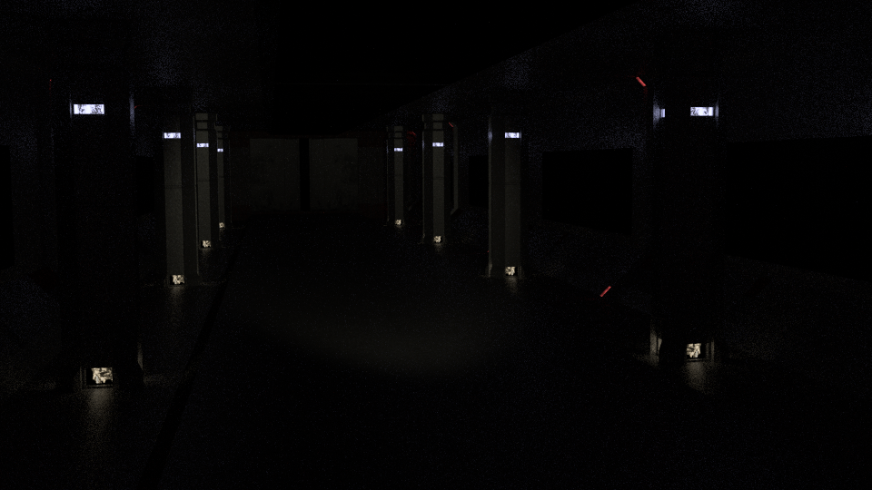
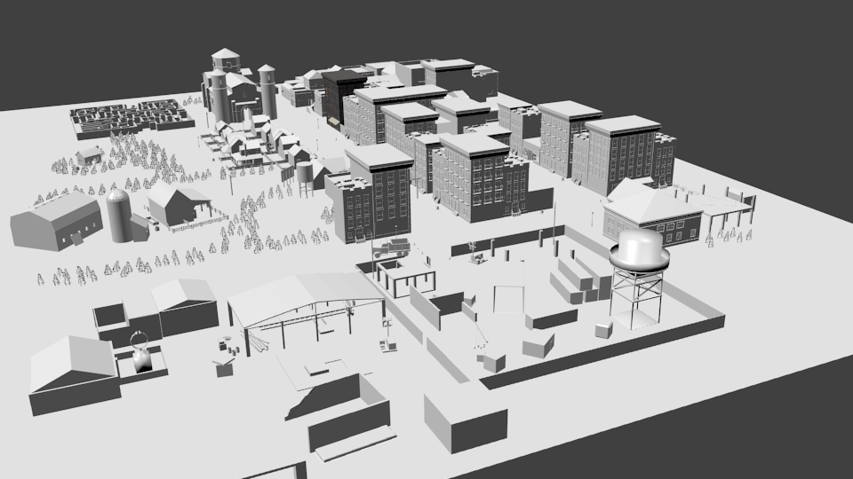
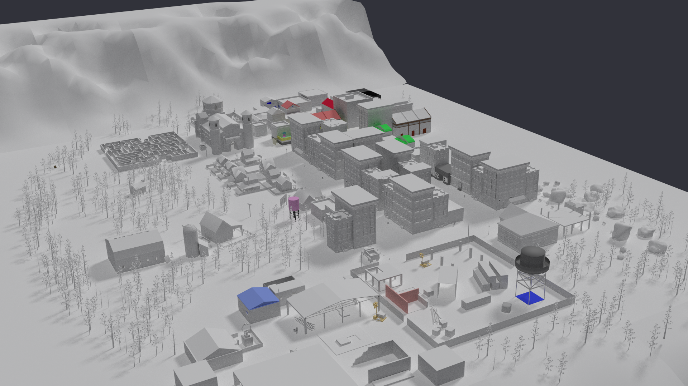

Blackout:Paranormal Outbreak extras
Laboratory level and design
- Developed in Blender
- Developed in Unity
Escenario modelado para la intro del videojuego Blackout:Paranormal Outbreak..
Primero se diseñó,modelo y se realizó una animación básica de cómo sería el video de introducción del juego completamente en blender.
Después se reconstruyó la escena en Unity, añadiendo alguna mecánica de interacción y efectos extra para grabar el video de introducción.
BlackOut level
- Developed in Blender
- Developed in 3dstudio Max
- + 120 assets


Escenario modelado para el nivel del videojuego Blackout:Paranormal Outbreak..
Se ha modelado en Blender y 3dstudio Max. Para el texturizado y construcción del nivel se ha usado Blender.